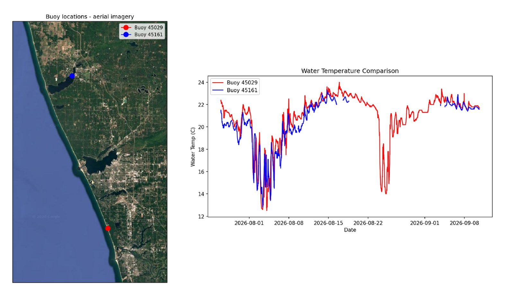

Open lake vs. sheltered lake: what two buoys reveal

Using Python, I pulled about 45 days of NOAA data from two nearby buoys, one in open Lake Michigan off Holland and one inside sheltered Muskegon Lake, and mapped them on satellite imagery and bathymetry. Comparing water temperature, wind and waves revealed two cold upwelling events, a 0.97 correlation between wind and gust speed, and a data gap that changes how the two buoys’ peak gusts should be compared.